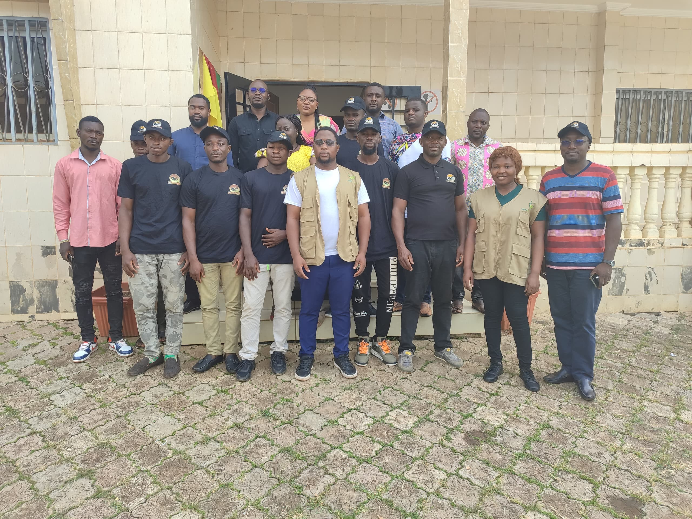
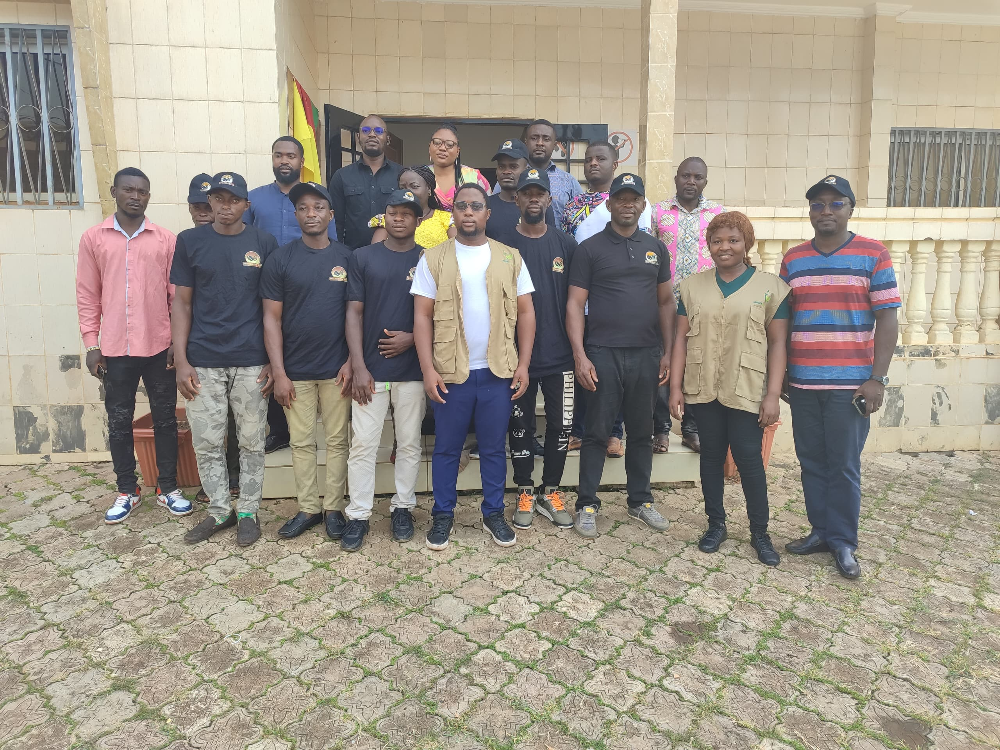

En effet, dans une logique d'accompagnement de ce Géant du Cacao Camerounais dans la mise en œuvre de son programme de Durabilité Rainforest Alliance, nous avons posé les jalons d'une collaboration fructueuse et durable. Le Cabinet SENIMA Company ont assuré la formation des agents Cartographes et le renforcement des capacités du SGI du groupe NEO INDUSTRY sur les exigences Rainforest Allianc e en matière de collecte et de gestion des #Géodonnées.

 

Le Cabinet SENIMA Company a répondu présent à l'atelier organisé par le groupe de recherche #HoPiT de l'Université de Yaoundé 1 dont le but était de partager la synthèse des travaux engagés autour du projet GDAR
S'inscrivant à la suite d'une série d'entretiens individuels sur l'impact des inondations dans la ville de Yaoundé, Il était essentiellement question lors de cet atelier de valider ensemble un modèle systémique sur les stratégies d'adaptation communautaire face aux inondations, ceci en intégrant l'ensemble des parties prenantes, leur rôle, les stratégies communes et les effets.
Cet atelier riche en échanges a vu la participation de plusieurs acteurs organisationnels engagés sur les thématiques de changement climatique.


Le projet Forest Allies mis en œuvre dans la Commune de Bana par l'organisation SAPED vise le développement des stratégies de conservation du paysage forestier des Monts Bana-Bagangté-Bangou. Dans l'optique de conduire les opérations de Cartographie des unités agricoles des producteurs de Cacao regroupés sous le label associatif de la SCOOPS PROCABA, le Cabinet SENIMA Company a été mis à contribution pour conduire les travaux de géolocalisation sur le terrain
Cet atelier riche en échanges a vu la participation de plusieurs acteurs organisationnels engagés sur les thématiques de changement climatique.

La cartographie thématique fait partie de ce qu’on appelle plus généralement la représentation cartographique. Elle permet la réalisation d’images graphiques particulières qui traduisent les relations spatiales d’un ou plusieurs phénomènes, d’un ou plusieurs thèmes.
Nous sommes engagés dans le processus de Durabilité Rainforest Alliance à travers l'accompagnement technique de plusieurs coopératives et groupes (TC/CH) parmi lesquels:
Le groupe ACC (Atlantic Cocoa Corporation)
carte administratives
PREMIUM Agric, basé à Ntui
SOCOOPACC COOP-CA, basé à Obala
Le Cabinet SENIMA Company vient de nouer un partenariat prometteur avec l'ONG Rainforest Alliance pour assurer la mise en œuvre du projet susmentionné.
Il s'agira essentiellement:

De conduire les opérations de Cartographie participative auprès de 30 ménages partenaires
D'évaluer l'impact des activités des ménages sur la gestion du paysage forestier de la commune de MINTOM.
Cette activité qui s'est déroulera sur plusieurs semaines sera essentiellement participative et a permis aux différents ménages de mieux évaluer le potentiel de leurs agro-forêts et ainsi capitaliser leur apport en biodiversité.


SOCIAL MEDIA


.png)
LEGAL
NOS SERVICES